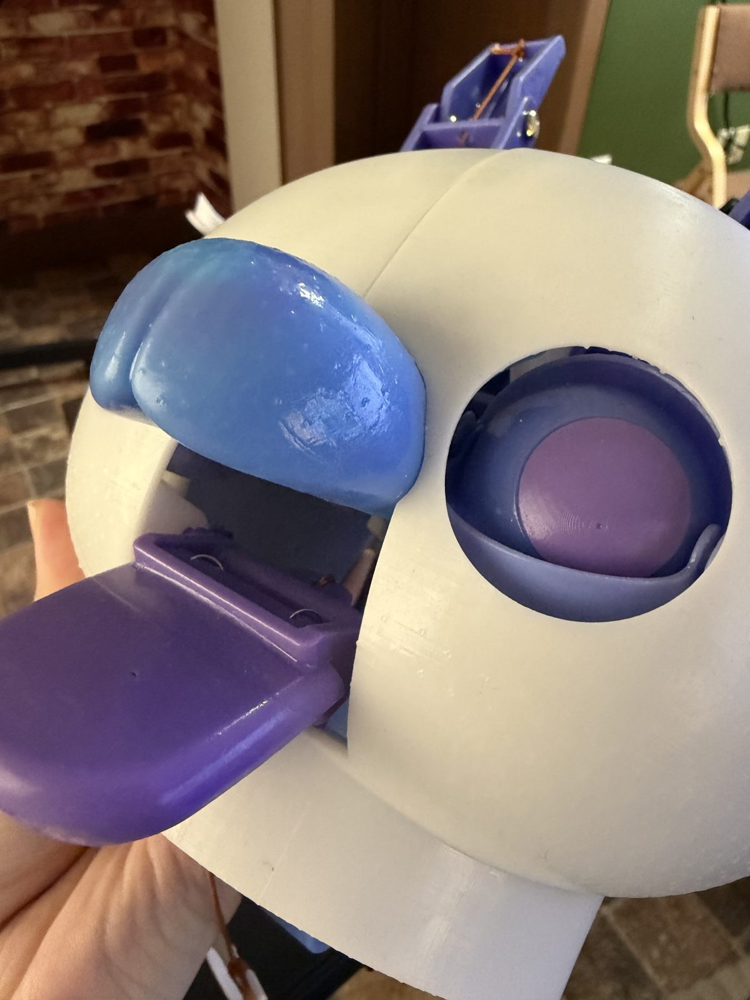

つぎの記録
つづきができたら、ここに書きます。もう少し待っててな。
KARAKURI PYONPY / BUILD LOG
ぴょんぴーを、腹話術の人形みたいに動かしたい。
目も、口も、舌も。手元の仕掛けで動く「からくりぴょんぴー」を、いま作っています。

3Dモデルを読み込み中…
EXPLODED VIEW / CAD DATA
設計データを、部品ごとにバラバラにしてみました。
スクロールすると、組み上がっていきます。
内側の仕掛けから、ひとつずつ。
目を動かすパーツ、口を開けるパーツ。
最後に、白い頭がかぶさります。
これが、からくりぴょんぴーの顔。
「中をのぞく」を押すと、
組み上がった中の仕掛けが透けて見えます。
01 / BUILD LOG
新しい記録ほど、上に並びます。
つづきができたら、ここに書きます。もう少し待っててな。
白い頭の内側に、目と口を動かすための紫と青のパーツ。糸を引くと、仕掛けが動きます。
3Dプリントした頭に、目と舌のパーツを組み込みました。まずは手で動かして、表情を確認。